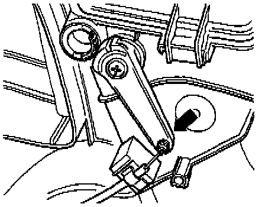

Without Air Conditioning

NOTES:
- Install cable ends identified with colored bands to control head levers.
- Connect the cables to the fresh air/heating controls before connecting them to the evaporator/heater box levers.
- After connecting the cables to the control levers, position the cable sleeves against the stops and fasten to the controls using clips.
- Adjust the cables at the flap levers with the control assembly installed.
- When the control knobs are turned from stop to stop, the flaps must move and audibly make contact with the stops.
1 - Main Shut-off Flap Cable
- Connects blower control knob to main shut-off flap
- Black sleeve
- Length: 807 mm (31.8 in.)
- Adjusting, see below.
2 - Temperature Flap Cable
- Connects temperature control knob to temperature flap
- Blue sleeve
- Length: 585 mm (23.0 in.)
- Adjusting, see below.
3 - Footwell/defroster Flap Cable
- Connects air flow distribution knob (upper control lever) to footwell/defroster flap
- Black sleeve
- Length: 488 mm (19.2 in.)
- Adjusting, see below.
4 - Central Flap Cable
- Connects air flow distribution knob (lower control lever) to central flap
- Black sleeve
- Length: 639 mm (25.2 in.)
- Adjusting, see below.
Adjusting Main Shut-Off Flap Cable:

- Install fresh air/heater control assembly in instrument panel. Service and Repair
- Adjust fresh air blower switch -E9- to stop at position "0".
- Connect main shut-off flap cable (black sleeve) to main shut-off flap lever.
- Push lever in direction of arrow to stop.
- Hold lever in this position and install cable retaining clip.
Adjusting Temperature Flap Cable:

- Install fresh air/heating control assembly in instrument panel. Service and Repair
- Adjust temperature control knob to full cold.
- Connect temperature flap cable (blue sleeve) to temperature flap lever.
- Push lever in direction of arrow to stop.
- Hold lever in this position and install cable retaining clip.
Adjusting Footwell/Defroster Flap Cable:

- Install fresh air/heating control assembly in instrument panel. Service and Repair
- Adjust air flow distribution knob to defrost position (against stop).
- Connect footwell/defroster flap cable (black sleeve) to foot-well/defroster flap lever.
- Push lever in direction of arrow to stop.
- Hold lever in this position and install cable retaining clip.
Adjusting Central Flap Cable:

- Install fresh air/heating control assembly in instrument panel. Service and Repair
- Adjust air flow distribution knob to defrost position (against stop).
- Connect central flap cable (black sleeve) to central flap lever.
- Push lever in direction of arrow to stop.
- Hold lever in this position and install cable retaining clip.